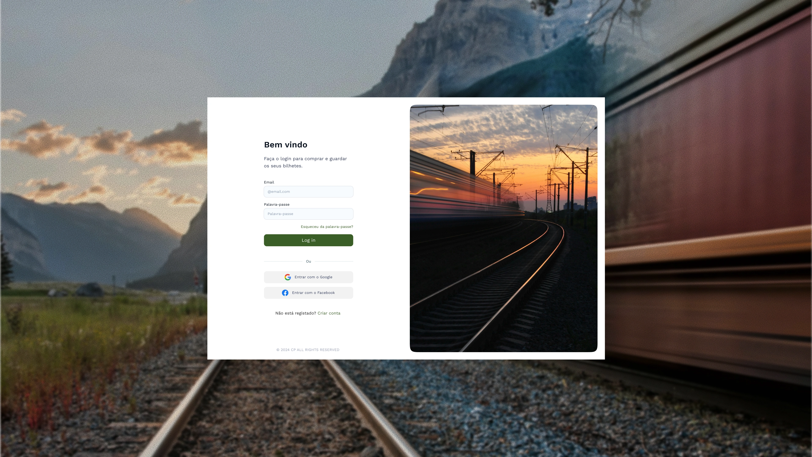
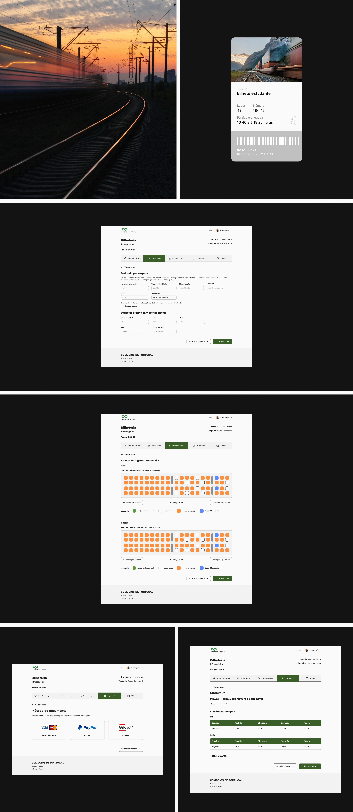
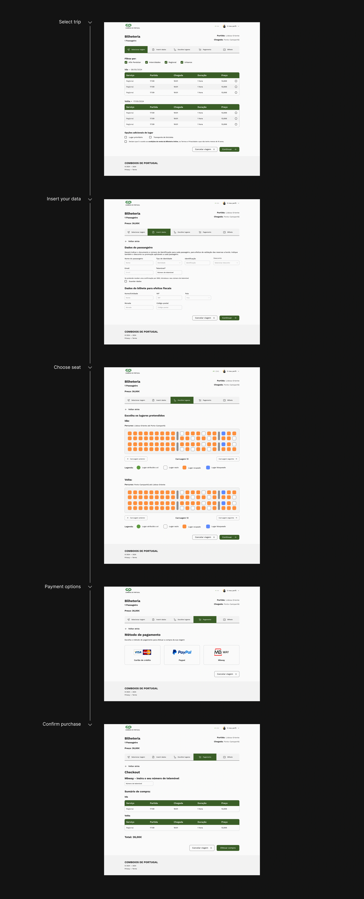

Next project
Kurio
Web Design

The Comboios de Portugal project was a website redesign developed for the Web Accessibility and Usability class, with the aim of improving the user experience, accessibility and usability. Throughout this project, I conducted user interviews to identify key pain points, created maze tests to gather insights that informed the UX improvements. I then created a userflow system, wireframes, and medium-fidelity prototypes that were focused on delivering a more intuitive, better user-centered experience and accessible interface.

Challenge
User research and validation
The redesign of the Comboios de Portugal website aimed to address significant usability and accessibility issues that were limiting users’ ability to efficiently search routes, purchase tickets, and access essential travel information. As a national transportation service, the platform serves a wide and diverse audience, making clarity, inclusivity, and ease of navigation critical. The challenge was to simplify complex information structures, improve the overall user flow, and ensure compliance with accessibility best practices, transforming a dense and outdated interface into a more intuitive and user-centered digital experience.

Approah
Accessibility and design system
Following an accessibility audit of the website, several usability issues were identified, particularly related to typography, visual hierarchy, and color contrast. These findings highlighted the need for a more structured and consistent interface. To address these challenges, a new design system was developed, including a refined typographic scale, improved contrast ratios, and a cohesive set of reusable components. The result was a clearer information hierarchy, improved readability, and a more accessible and inclusive user experience.



Next project
Web Design